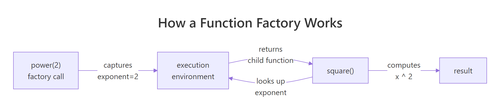
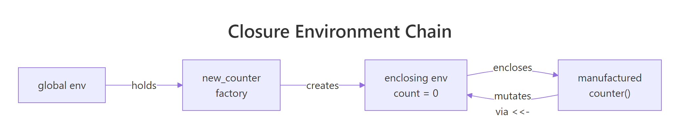
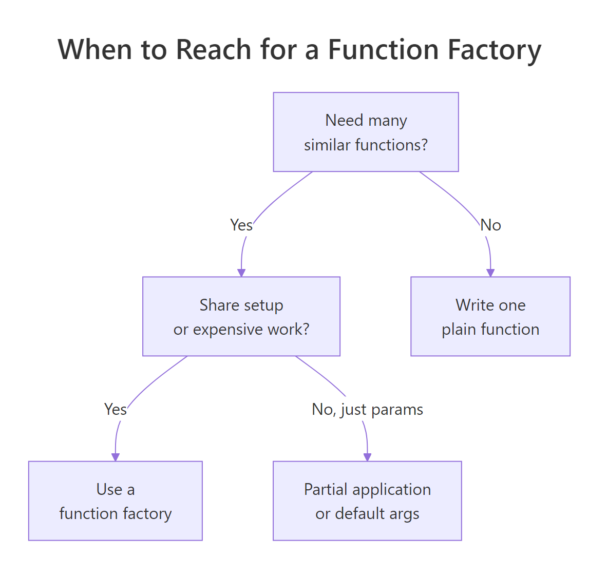

R Function Factories: How to Build Customisable Functions That Generate Functions
A function factory is an R function that builds and returns another function, trapping its arguments inside a persistent closure so the child function "remembers" them. The pattern turns one-off helpers into reusable templates you can tailor on the fly.
What is a function factory in R?
Imagine you need square(), cube(), and a tenth-power helper, identical except for the exponent. Writing three copies is busywork. A better move is to write power() once, hand it an exponent, and let it return a specialised child function you can call like any other. Here is the whole idea in six lines of R, with the payoff on display.
power() is the factory. It does not do the work, it manufactures a worker. Every call to power() returns a brand-new function that carries its own exponent along with it, tucked inside the enclosing environment of the returned function. square and cube look like plain functions from the outside, but each one has a tiny backpack of remembered state.

Figure 1: How power(2) captures its exponent and returns a specialised child function.
This is exactly how scales::dollar, scales::percent, ecdf, and approxfun work under the hood in base R and the tidyverse.
Try it: Build a factory ex_multiplier(factor) that returns a function multiplying its argument by factor. Use it to make a triple function and apply it to 1:4.
Click to reveal solution
Explanation: ex_multiplier returns an anonymous child function. That child remembers factor because its enclosing environment is the execution environment of ex_multiplier, where factor = 3 was bound.
Why does R need force() inside a function factory?
R evaluates arguments lazily, it does not look at the value of a parameter until something in the function body actually uses it. That sounds harmless until you build factories inside a loop. Watch what happens when we try to make a list of power functions the naive way.
All three functions return 10000, which is 10^4. That is not what we asked for. The problem is subtle: when power(e) runs, exponent is bound to a promise pointing at e. The promise is not evaluated until someone calls the manufactured function, and by then the loop has finished, leaving every promise resolving to the last value of e. Every child function ends up with the same exponent.
The fix is a single line: force(exponent) evaluates the promise immediately, locking the value in before the child function is returned.
Now each child carries its own exponent. force() itself is nothing magical, it is literally defined as function(x) x. The important bit is naming it: calling force(exponent) tells both R and the next reader of your code "I deliberately want this promise resolved right here."
Try it: The factory below is broken by lazy evaluation. Fix it so each adder adds the correct value.
Click to reveal solution
Explanation: Adding force(n) resolves the promise while i still points at the correct loop value. Without it, every adder shared the final i.
How do function factories use closures to remember state?
So far every child function has been read-only with respect to its captured values. But the enclosing environment is a real R environment, you can also write to it. The super-assignment operator <<- walks up the scope chain and updates a binding in the first enclosing frame that has it. That turns the enclosing environment into persistent memory.
The canonical example is a counter factory. Each call to new_counter() creates an independent counter with its own state.
counter_a and counter_b look identical, but they are isolated. Each one has its own enclosing environment containing a private count variable, created fresh when new_counter() was called. Using <- inside the child would create a local variable and throw away the update; <<- is what makes the memory stick.

Figure 2: Each counter created by new_counter() holds its own enclosing environment.
Try it: Build ex_running_sum(), each call to the returned function should add its argument to a running total and return the new total.
Click to reveal solution
Explanation: total <<- total + x updates the total binding in the enclosing environment of ex_running_sum, so the value persists across calls to adder().
When should you use function factories over regular functions?
Function factories earn their keep when expensive work can be done once and then reused on every call to the child function. Maximum likelihood estimation is a classic case. To fit a Poisson rate $\lambda$ to observed counts, you minimise the negative log-likelihood:
$$-\log L(\lambda) = n \lambda - \left(\sum_i x_i\right) \log \lambda + \sum_i \log(x_i!)$$
Where:
- $n$ = number of observations
- $\sum_i x_i$ = the sample total
- $\sum_i \log(x_i!)$ = a constant that does not depend on $\lambda$
Notice that $n$, $\sum x_i$, and the factorial term never change as the optimiser explores different values of $\lambda$. A naive implementation would recompute them every step. A factory can stash them once.
The optimiser hammered the child function hundreds of times, but length(), sum(), and the lgamma work happened exactly once. For a 500-element sample the savings are small; for millions of rows it is the difference between a cup of coffee and an afternoon.
function(...) line. This is the single biggest performance lever factories give you.Try it: Write ex_deviation(x), it precomputes mean(x) and returns a function that takes a new value v and reports how far it is from that mean.
Click to reveal solution
Explanation: mean(x) runs once when the factory is called and the result is stashed in mu. Every subsequent call to dev_fn() reads that constant instead of recomputing it.
How do function factories power ggplot2 label formatters?
Open scales::label_number() or scales::label_dollar() and you will find function factories. They take formatting options (prefix, suffix, big-mark, precision) and return a function that turns a numeric vector into strings. That is exactly the shape ggplot2 wants for axis labels, a single-argument function, so factories let you configure the formatting up front and pass the customised child into scale_y_continuous(labels = ...).
You can build your own in a few lines.
dollars and pct2 are ordinary-looking functions a plot can call with a single vector of numbers. All the configuration work happened once, inside label_maker. If you ever tried passing formatting options directly to ggplot2 and ended up with an anonymous-function soup, this is the clean alternative.
optimise(), integrate(), Reduce(), and purrr::map() all fit this description.Try it: Write ex_percent(digits), a factory returning a function that formats numeric proportions as percentages with the given number of decimal places. ex_percent(0) on 0.257 should give "26%".
Click to reveal solution
Explanation: The child multiplies by 100 to convert the proportion, uses formatC to control decimal places, and pastes a % on the end. The factory configures digits once.
How do you avoid memory leaks in function factories?
There is one footgun worth knowing about. A manufactured function keeps its enclosing environment alive as long as the function itself is alive, and that enclosing environment contains everything that was defined inside the factory, not just the things the child function uses. If you happen to create a big temporary object in the factory body, it sticks around forever.
f_heavy is a trivial "add 0.1" function, yet it is dragging 7.6 MB of dead weight around because big is still sitting in its enclosing environment. The fix is to delete the unused object inside the factory before returning the child.
Down from 7.6 MB to under 2 KB. The rule is simple: anything you compute inside a factory but do not need in the child function should be removed with rm() before you return.
rm() heavy intermediates.Try it: The factory below captures a large raw object it does not need. Clean it up so the returned function is lean.
Click to reveal solution
Explanation: raw was only needed to compute threshold. After that we drop it with rm(), and the child function keeps just the small threshold value in its enclosing environment.
Practice Exercises
Two capstone problems combining everything above. The my_* prefixes below keep exercise state from colliding with earlier code.
Exercise 1: Build a bounded clipper factory
Write make_bounded_clipper(lo, hi) that returns a function which clips a numeric vector so every value falls inside [lo, hi]. Use force() for safety. Test it on c(-0.5, 0.3, 1.2) with a 0-to-1 clipper.
Click to reveal solution
Explanation: pmax(x, lo) lifts anything below lo; pmin(..., hi) caps anything above hi. force() guards against lazy evaluation if the factory is ever used inside a loop.
Exercise 2: Exponentially weighted moving average
Build make_ema(alpha) that returns a stateful function. On each call, the function takes a numeric value, updates an exponentially weighted moving average using new = alpha * x + (1 - alpha) * old, and returns the new EMA. Use <<- so state persists. Demonstrate two independent trackers.
Click to reveal solution
Explanation: Each tracker gets its own state via an independent enclosing environment. The first value seeds the state; subsequent calls blend the new value with the remembered one. my_fast reacts quickly because alpha = 0.5; my_slow smooths more because alpha = 0.1.
Complete Example
Let us put the pattern to work on something realistic: a reusable range validator for data-cleaning pipelines. You pass minimum and maximum bounds into the factory, and it hands back a function that audits a numeric vector and reports what failed. You can mint one validator for ages, another for percentages, and drop them straight into a dplyr pipeline.
Every trick from the tutorial shows up in make_range_validator. force() pins the bounds and label so the factory is safe inside loops. The precomputed msg is the MLE-style optimisation: build the error string once, reuse it forever. The returned closure carries min_val, max_val, label, and msg in its enclosing environment, so the two validators stay independent despite sharing code. And because the result is a plain single-argument function, you can pipe it into purrr::map(), dplyr::summarise(), or anything else that expects f(x).
Summary

Figure 3: Decision guide for when a function factory is the right tool.
| Pattern | When to use | Key rule |
|---|---|---|
power(exponent) style |
You need many near-identical functions differing only by a parameter | The parameter lives in the enclosing environment |
force(arg) guard |
Any time the factory is called inside a loop or lapply |
Force before the inner function(...) line |
<<- super-assignment |
You need persistent state (counter, cache, EMA) | Initialise state inside the factory, mutate inside the child |
| Precompute inside factory | Expensive setup that does not depend on the child's input | Move constants above the inner function(...) line |
rm() cleanup |
You created a large intermediate but do not need it in the child | Call rm() before returning the child function |
The mental model to keep: a function factory is a function-building function. Everything before the inner function(...) line runs once; everything inside runs on every call to the child. Push work upward to run it once, and use the enclosing environment as the bridge.
References
- Wickham, H., Advanced R, 2nd Edition, Chapter 10: Function factories. Link
- Wickham, H., Advanced R, 2nd Edition, Chapter 6: Functions (closures and lexical scoping). Link
- Advanced R Solutions, Chapter 9: Function factories exercises. Link
- R Documentation,
force(): forcing evaluation of an argument. Link - R Documentation,
environment(): inspecting and manipulating environments. Link - scales package,
label_number()and the formatter family (real-world factories used by ggplot2). Link - factory package on CRAN, tools for building function factories with cleaner printed output. Link
Continue Learning
- R Closures, The closure mechanism that makes every factory in this tutorial work. Go deeper on environments and lexical scope.
- R Function Operators, A close cousin of factories: functions that take a function and return a modified version of it. Think decorators in Python.
- Functional Programming in R, How factories, closures, operators, and functionals fit together as one coherent toolkit.